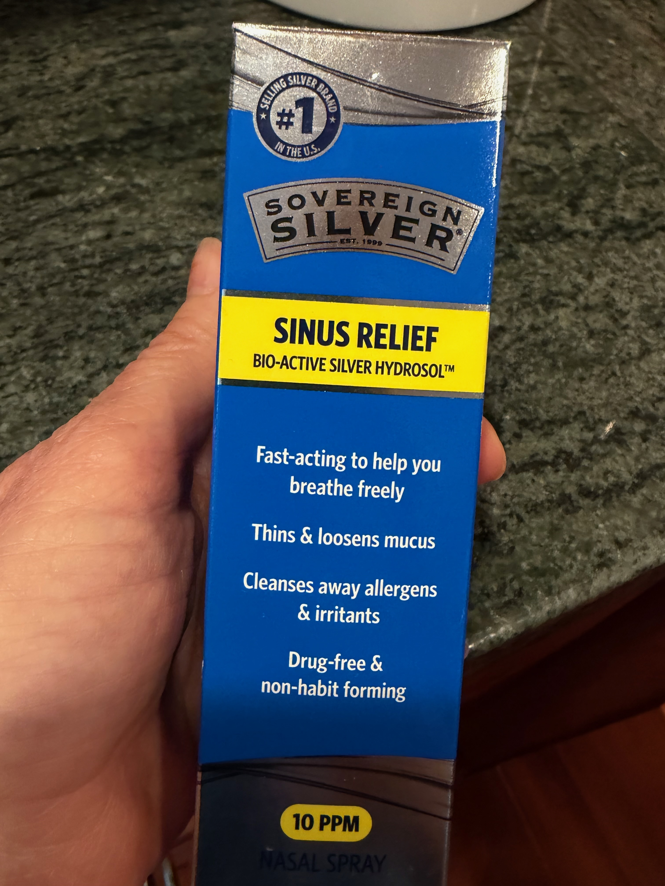

You know that feeling. Something is going around. Maybe it's flu season, maybe there's a new variant, maybe your kid just came home from school looking pale. And the options you know about are: wash your hands, get your shot, maybe take some Vitamin C, wait and see.
That's it. That's the whole menu. That's all we have to protect ourselves and it doesn't look like much.
No wonder so many of us feel like our bodies are just waiting to betray us — and that the best we can do is hope the right product is available when they do.
But what if that's not the whole story? What if you have more capacity than you've been told?
Meet Your Bodyguard
You have more capacity than you've been told.
Chinese Medicine has known this for over three thousand years. They didn't wait for a pandemic to think about immunity. They built an entire framework around it — and at the center of that framework is something called Wei Qi.
Wei Qi (pronounced Way-Chee) is your body's bodyguard. Your first line of defense against everything trying to get in — viruses, bacteria, the thing your coworker had last week that you really don't want.
I like to think of Wei Qi as a big strong bouncer standing at the door. Muscle bound, arms crossed, not impressed by anything coming his way. When your Wei Qi is strong, that bouncer is alert, well-fed, and ready. When it's depleted — by poor sleep, bad food, stress, fear, or just running on empty for too long — he's tired. Distracted. And things get through that shouldn't.
Mr. Wei Qi Man — your body's first line of defense
Here's what Western medicine doesn't often tell you: you have enormous influence over how strong that bouncer is. Not through products. Not through protocols. Through how you live.
That's the conversation Chinese Medicine has been having for three thousand years. And it starts with something you do every single day.
It starts with digestion.
The Bouncer's Two Jobs
Mr. Wei Qi Man has two jobs. He guards the door against what's circulating out there — the viruses, the bacteria, the thing going around. But he also guards against something subtler: the fear of those things. Because here's what Chinese Medicine understood long before modern science caught up — chronic fear and anxiety have a physiological address. They land in your body. They weaken the very system designed to protect you.
The stress response is real — it's just misdirected. Your body mobilizes against a threat that isn't physical, burns resources, and has less left over for actual immune defense.
It Starts With Digestion
Think of your Spleen as your body's processing center. Everything you take in — food, drink, even experience — passes through it. When it's working well, it extracts what's useful and moves it where it needs to go. And uses that for energy. When it's overwhelmed or undermined, it can't finish the job. What doesn't get processed becomes what TCM calls dampness — a kind of internal sluggishness that shows up as mucus, phlegm, heaviness, foggy thinking, and fatigue.
Sound familiar? It should. Those are also the symptoms of a body struggling to fight off illness.
That's not a coincidence.
The Sugar Evidence
There's a study from 1973 that doesn't get nearly enough attention. Researchers at Loma Linda University found that consuming sugar — about the amount in a liter of soda — significantly reduced the ability of white blood cells to engulf bacteria. The effect set in within the first hour and lasted at least five hours. It didn't matter whether the sugar was table sugar, honey, fructose, or orange juice. The result was the same. A reduction of roughly 40% is the figure most often cited from that study, and whatever the exact number, the direction was unmistakable.
I've never forgotten that.
For a long time, that study lived mostly in integrative medicine circles — the kind of thing your naturopath knew and your GP didn't. Then in 2009, a pediatric endocrinologist at UCSF named Dr. Robert Lustig posted a 90-minute lecture on YouTube called "Sugar: The Bitter Truth." It was dense. It was biochemical. It had no business going viral. And yet millions of people watched it — because he was saying out loud, with credentials and data, what many of us had quietly suspected: sugar isn't just empty calories. It's a metabolic event. The damage, he argued, is cumulative — and most of us are getting far more than our bodies can handle.
The science has kept moving. A 2022 study published in Cell found that dietary sugar disrupts the microbiome in ways that directly impair the immune system's ability to protect itself. A different mechanism than 1973 — but the same throughline: sugar and immune function are connected.1
None of it became a public health campaign. Fifty years after that first study, we still talk about immunity as though the main variables are hand-washing and vaccines — and sugar isn't even in the conversation.
That's the part I can't get over.
I started paying attention in my own family years ago. We had a rule: when someone in the house was sick, everyone stopped eating sugar. Not forever. Just while the illness was moving through.
One week my daughter had been sick for a few days. My son was healthy and wanted to go to a birthday party. I'd been keeping him away from sugar while his sister was ill — but at the party there was cake and he really wanted to be like every other kid at the table. So he ate it.
Within 30 minutes he had a fever. I got a call to come pick him up.
That's the kind of thing that makes you go hmmm.
Years later, three members of my family came down with Covid after a day at Universal Studios. Those same three had spent the day drinking Butterbeer and eating cotton candy. I had passed on both. I was the only one who didn't get sick. In the days before we realized they had Covid, my youngest was coughing directly on me.
I tested myself three or four times. Every test came back negative.
I'm not saying sugar gave them Covid. I'm saying the body keeps score. In my experience, I've seen sugar and illness follow each other too many times to call it coincidence. And a growing body of work links sugar to immune dysregulation in various ways — in the language of T cells, microbiomes, and inflammatory pathways.
You are either depleting the Big Bouncer at the Door, Mr. Wei Qi Man, or you are feeding him with every single choice you make. Most of what keeps him strong isn't dramatic. It isn't expensive. It doesn't come in a bottle. It's the accumulation of daily choices — the small ones, the ones that don't feel like they matter. Come on, you know you've done it. Thinking you're strong, you don't need a jacket or a scarf. Sleep doesn't matter that much. You'll be fine.
But the truth is that it does matter. Three thousand years of observation in Chinese Medicine supports this. And so do my own thirty years of watching it play out in my family.
These things we dismiss as no big deal — they either resource Mr. Wei Qi Man or they deplete him. When you go outside underdressed in cold air, your body has to work hard just to keep itself warm. That takes energy. Energy that would otherwise be used for immune support.
Your bouncer is busy shivering. He's not watching the door.
Eat Warm. Start There.
In Chinese Medicine, cold foods and drinks shock the Spleen — that processing center we talked about. Your body has to divert energy just to warm things up before it can even begin digesting them. Think about starting your day with a cold smoothie versus a warm bowl of congee, kichari, or oatmeal, or a cup of warm broth. One of those asks your body to do extra work before breakfast is even processed. The other says: here, I made it easy for you.
There is a saying in Chinese Medicine that we should eat 110 degree soup. What that means is that our food should be warm enough to nourish the digestive fire — supporting the Spleen and Stomach — and prevent cold and damp from taking hold inside the body. Not scalding. Just warm enough to say: I'm on your side.
It doesn't have to be complicated. Warm tea in the morning. Soup instead of a salad when it's cold outside. These are not radical acts. They are small acts of loyalty to your bouncer.
The Wind Gate
In TCM there is a point at the back of the neck called the Wind Gate — the place where external pathogens are said to enter the body. I had a nurse in my acupuncture program whose husband was a doctor. She balked at the idea of wearing a scarf. Too simple. She was a believer in Pasteur's germ theory — this was too folk remedy. Within six months she was a convert. She had started paying attention and she saw it too.
Cover your neck. Protect the back of your head when you go outside in cold or windy weather.
Germ Theory Got It Half Right
We've all been taught the same thing: germs cause illness. Find the germ, eliminate the germ. That's germ theory and it isn't wrong — but it may be incomplete.
There's a famous debate in the history of Western medicine between Louis Pasteur, who gave us germ theory, and Antoine Béchamp, who argued something different: that the condition of the body determines whether a germ can take hold at all. He called it terrain theory. The story goes that Pasteur himself, on his deathbed, finally conceded the point. But honestly, no one can figure out if that is really true or not. Whether Pasteur actually conceded or not, the idea has endured:
"The microbe is nothing. The terrain is everything."
This is the heart of Chinese Medicine. Chinese Medicine never needed that confirmation. It had been working with terrain theory for three thousand years. Of course there are viruses and bacteria. But whether they take hold depends on the terrain. On whether your bouncer is strong and alert — or depleted and distracted.
I want to be clear — I'm not dismissing Pasteur. Germ theory gave us antibiotics, vaccines, and modern medicine. That's not nothing. But it's one piece of the puzzle. The terrain piece is equally important and it gets far less attention.
And yes — there are people who smoke a pack a day, drink every night, never wear a scarf, and live to 105. I am not one of them. I know my body. I know what resources it and what depletes it. And one of the simplest things I do to take care of myself is cover my neck when I go outside in the cold.
It costs nothing. It takes two seconds. And my bouncer appreciates it.
Keep the Door Moist
One more simple thing that makes a real difference, especially in winter: keep your mucous membranes moist. When indoor heating runs all day and all night, the delicate lining of your nose and throat dries out. And dry mucous membranes are like a cracked door — they're far more vulnerable to viruses and bacteria than moist ones.
A Neti pot or a NeilMed saline rinse bottle can help. So can a humidifier in your bedroom. And when I'm traveling, in large crowds, or just on the go, I reach for a silver-based saline nasal spray — it's drug-free, easy to carry, and keeps things moist when I can't do a full rinse. The one I use is called Sovereign Silver Sinus Relief. I'm not selling it or affiliated with it in any way — it's simply what I've found useful for myself, and I mention it because people always ask what I actually use. You can find it in most health food stores.

What I keep in my travel bag — not a recommendation, just a resource.
These are not glamorous recommendations. But neither is getting sick.
Sleep Is Not Optional
And then there is sleep.
I used to tell my kids that little elves came out at night while they slept to do all the repair work. As they got older I told them the truth: those elves have a name. They're called Somatomedins — growth factors released during sleep that promote cellular repair and immune rebuilding. The elves are real. They just need you to get quiet enough to do their job.
When you are tired — really tired, bone tired — there is a reason. Your bouncer may be working overtime on something you haven't even noticed yet. I've had the experience more than once of someone in my family being sick and me suddenly feeling exhausted in the middle of the day. I stopped, I slept for three hours, I woke up fine. I believe my body used that sleep to fight off something before it took hold.
Over the years I've met many people who know their bodies well enough to know exactly what to do when they feel something coming on. They go horizontal. They don't power through with coffee. They don't take something to suppress the fever so they can keep functioning. They sleep and they get better faster.
I'll admit — I haven't always followed my own advice here. When my kids were small I had continuing education credits due every year and I always waited until the last minute. Weeks of staying up too late, night after night. A very dear friend — someone who was like a second father to me — got worried. He came to my house with a kind letter and a printed study about sleep. He sat me down and told me he was concerned.
I assured him I was fine. I was a little annoyed, honestly.
The next day I found myself sitting on my front steps crying for twenty minutes. Two young children, no sleep, and a complete meltdown. That was my wake up call.
Sleep does matter. You may feel like you can navigate on less — especially when you're younger. But eventually it catches up with you. In one way or another, it always does.
Your bouncer doesn't work the night shift. That's when he gets rebuilt. Don't rob him of that.
So we've talked about what you eat, how you dress, what you put in your nose, and how much you sleep. These are the physical ways you resource Mr. Wei Qi Man. They matter enormously.
But there is one more layer. And in some ways it's the most important one.
Remember — Mr. Wei Qi Man has two jobs. He guards the door against what's circulating out there. And he guards against something subtler: the fear of those things. Fear doesn't scare the bouncer. It just keeps him so busy dealing with phantom threats that he misses the real ones.
So what do you do about fear? How do you actually work with it rather than just trying to ignore it?
When Covid first hit, we were all given three directives: wash your hands, social distance, quarantine. Good advice. Necessary advice. But I want to offer you a different version of those same three directives. An inner version. Because your mental and spiritual environment is terrain too.
Sanitizing
The outer practice is about removing what doesn't belong on your body. The inner practice is the same: what thoughts are you allowing to live in you? Fear, worst-case scenarios, the ambient dread of "something is going around" — these aren't neutral. They have a physiological address. In TCM, chronic worry and anxiety directly injure the Spleen — the very organ responsible for your immunity. Cleansing your mental environment is not a luxury or a spiritual bypass. It is necessary if you are looking for immune support.
Social Distancing
You get to choose what you let close to you — and that includes information. Not every headline deserves to live in your nervous system. Not every fearful story someone tells you at a party needs to be absorbed. Distance from panic is not denial. It's discernment.
Quarantine
Every tradition has a version of this: go inside. Get still. There is a place in you that is not touched by what is circulating out there. Some people will tell you that prayer, meditation, rest, and silence are for the weak or just plain silly. But what they actually give you is strength. They are where your system resets and remembers its own capacity to heal.
Remember those little elves — the Somatomedins? They do their best work when you are still and quiet. If you have something you want to heal from, sleep is your good friend. So is prayer. So is meditation. So is simply sitting somewhere peaceful and letting your nervous system remember that it is safe.
The elves are real. Give them the conditions they need to work.
When you stop scrolling. When you rest. When you take that horizontal break before you hit the wall — that's not laziness. That's your system gathering its strength back. In the Oura ring world they call it the Restored zone. Your body knows it as coming home.
I've been gathering these tools for thirty years. Some came from ancient medicine. Some came from sitting on my front steps crying. Some came from watching my kids at birthday parties and theme parks and putting the dots together.
None of it is complicated. All of it is yours now.
You know Mr. Wei Qi Man. You know what he needs. And you know that every single day you are either building him up or breaking him down — with what you eat, what you wear, how you sleep, and what you let live in your mind.
That is not a small amount of power.
Notes
1.On the science of sugar and immunity. For those who want to go deeper, the research has been building for decades across multiple disciplines: ↩
- Sanchez et al. (1973). Role of sugars in human neutrophilic phagocytosis. American Journal of Clinical Nutrition.
- Lustig RH. "Sugar: The Bitter Truth." UCSF public lecture, 2009. Available on YouTube.
- Kawano Y et al. (2022). Microbiota imbalance induced by dietary sugar disrupts immune-mediated protection from metabolic syndrome. Cell.
- University of Würzburg (2022). How sugar promotes inflammation — excess glucose dysregulates immune cell function. ScienceDaily / Cell Metabolism.
- Alhamawi et al. (2024). Free sugar intake associated with reduced natural killer T cells. Frontiers in Immunology.
If this resonated and you'd like support building your own terrain — I'd love to work with you.
Reach Out →